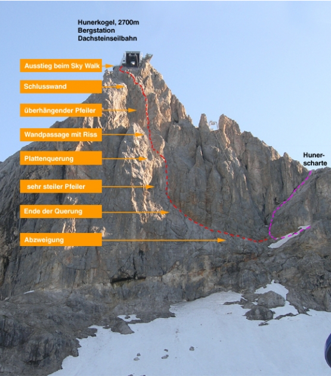

„Sky Walk“ heißt übersetzt „Himmelsweg“ und selten ist man bei einem Klettersteig dem Himmel so nahe wie hier! Extrem ausgesetzt verläuft der Steig durch die überhängenden Steilabbrüche des Hunerkogels, gute Rastpositionen sucht man in dieser Steiganlage vergebens. Der Steig gehört zu den schwersten Steiganlagen der Ostalpen. Bei einer Begehung ist - neben einer gehörigen Portion Mut - vor allem ausdauernde Armkraft gefragt! Das Finale des Sky Walk Klettersteiges ist ein sehr luftiger, leicht überhängender Pfeiler im Mittelteil der Wand. Aber auch schon der Einstiegspfeiler und die Plattenquerung haben es in sich. Unter der Regie von Karl Höflehner wurde im Juni/Juli 2006 von Hans Prugger und Alex Seebacher ein gelungenes Klettersteig-Testpiece geschaffen, das man an Steilheit kaum überbieten kann! Klettersteig-Neulinge oder nicht ganz so kräftige Bergsteiger sollten die Finger von diesem Eisenweg lassen – sonst kommen sie dem Himmel vielleicht näher als ihnen lieb ist.
Von der Abzweigung des Hunerscharten-Klettersteiges (B) zuerst leicht (A), dann etwas schwerer (B/C) auf einer Art Band bis zum ersten steilen Pfeiler leicht absteigend queren. Dort sehr steil (D) aufwärts und am Schluss in leicht überhängender Kletterei (C/D) zu dessen Ende. Es folgt eine Plattenquerung (D), die in einer mit einem Riss durchzogenen Steilwand mündet (D). Am Plattenende quert man kurz zum Pfeiler und klettert extrem ausgesetzt höher (anhaltend D/E) bis man oben erneut zu einer kurzen Linksquerung (D) kommt. Steil aufwärts in die Schlusswand (D), die erneut in eine leichter werdende Querung (C) mündet. Am Ende über einen Grat (B) in flaches Gelände vor der Absperrung. Über den Zaun und rechts hinauf zur Sky Walk Plattform.
Über die A 10 und Radstadt bzw. durch das Ennstal nach Schladming. Von dort in die Ramsau hinauf fahren. Westlich des Ortes führt die Mautstraße (Auffahrt mit Seilbahn-Fahrkarte gratis) zur Dachstein-Gletscherbahn (Parkplatz).
Öffis: Mit der Bahn nach Schladming und von dort mit dem Bus (Linie 960) bis Dachstein / Türlwandhütte.
Mit der Dachstein-Gletscherbahn zur Bergstation und von der Bergstation über einen kurzen Klettersteig (Abstiegsklettersteig, C/D, der Steig beginnt im Bereich des Aufganges zur Talfahrt, rot-weiß-rote Markierung) hinunter zu Hunerscharte (unter der Materialseilbahn) und über den neu sanierten Hunerscharten-Klettersteig bis zur Abzweigung des Sky Walk-Klettersteiges (Tafel). In die Hunerscharte kann man auch in einem Bogen über den Gletscher zusteigen. Beim Zustieg von der Türlwandhütte verlängert sich die Zustiegszeit um etwa 2:00 Stunden.
Höhe Einstieg: 2565 m
Abstieg: Mit wenige Schritten zurück zum Sky Walk bei der Bergstation der Dachstein-Gletscherbahn. Beim Abstieg zur Türlwandhütte verlängert sich die Abstiegszeit um etwa 1:40 Stunden.
Beste Jahreszeit: Juni, Juli, August, September, Oktober
